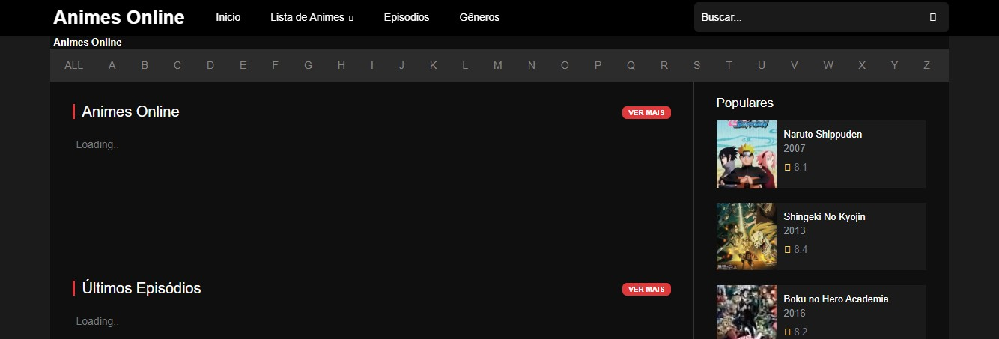
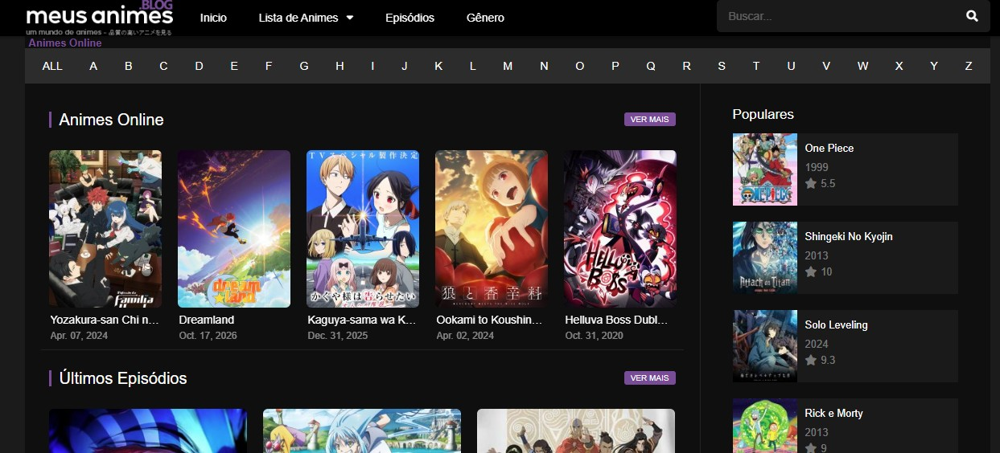
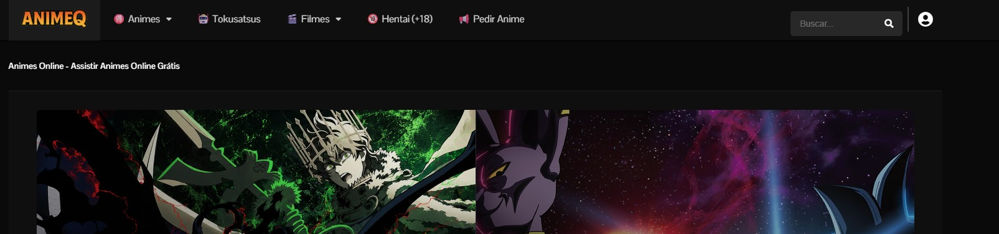

Ver anime
Se define por ver animações preferencialmente japonesas, mas hoje em dia
pode ser animações de varios paises
Sites para assistir
- Anitube
- AnimesOline
- MeusAnimes
- AnimeQ
- Abra seu navegador
- Digite no seu buscador o nome do site que você quer acessar
- Abra o link do site
- Escolha o anime e aproveite
Buscador de referência
Visitar o Google


